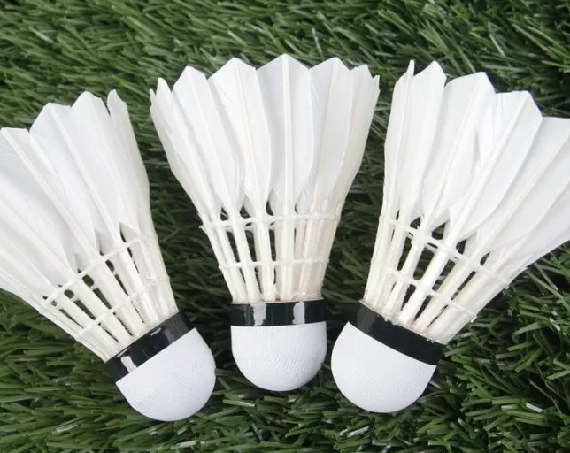

Badminton Indonesia Di Mata Dunia
Bulu tangkis atau badminton adalah suatu olahraga raket yang dimainkan oleh dua orang (untuk tunggal) atau dua pasangan (untuk ganda) yang saling berlawanan. Mirip dengan tenis, bulu angkis bertujuan memukul bola permainan ("kok" atau "shuttlecock") melewati jaring agar jatuh di bidang permainan lawan yang sudah ditentukan dan berusaha mencegah lawan melakukan hal yang sama. Untuk nomor-nomor yang dipertandingkan meliputi Tunggal Putra, Tunggal Putri, Ganda Putra, Ganda Putri dan Ganda Campuran. Dalam perkembangannya olahraga ini banyak merubah aturan yang bertujuan untuk mendapatkan minat lebih dari penonton ataupun pemirsa di TV.
Alat yang dipergunakan adalah raket sebagai alat pemukul serta "shuttlecock" sebagai bola yang dipukul.
Permainan dimulai dengan cara menyajikan bola atau service, yaitu memukul bola dari petak service kanan ke petak servis kanan
lawan, sehingga jalan bola menyilang.
Posisi kiri atau kanan tempat servis dilakukan ditentukan dari jumlah poin yang telah dikumpulkan oleh pemain yang akan
melakukan servis. Posisi kanan untuk jumlah poin genap dan posisi kiri untuk jumlah poin ganjil.
Servis dari posisi kanan juga dilakukan saat jumlah poin masih nol.
Pada set pertama pemain/pasangan yang melakukan servis untuk pertama kali ditentukan dengan undian,
sedangkan untuk set berikutnya dilakukan oleh pemenang dari set sebelumnya.
Untuk partai ganda, beberapa peraturan berbeda diterapkan untuk perhitungan poin menggunakan sistem pindah bola
dan sistem reli poin.